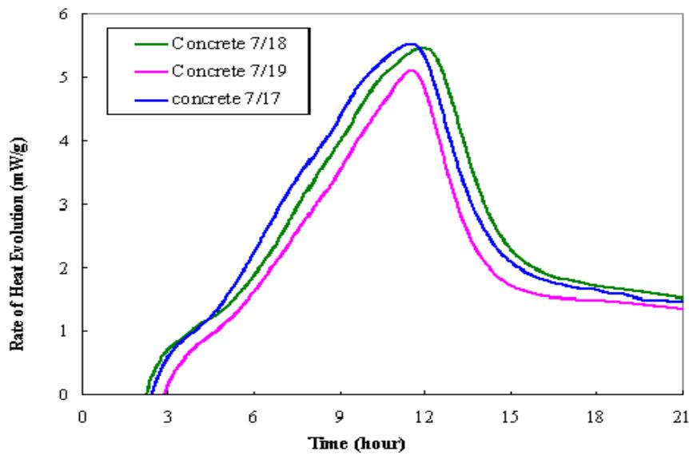
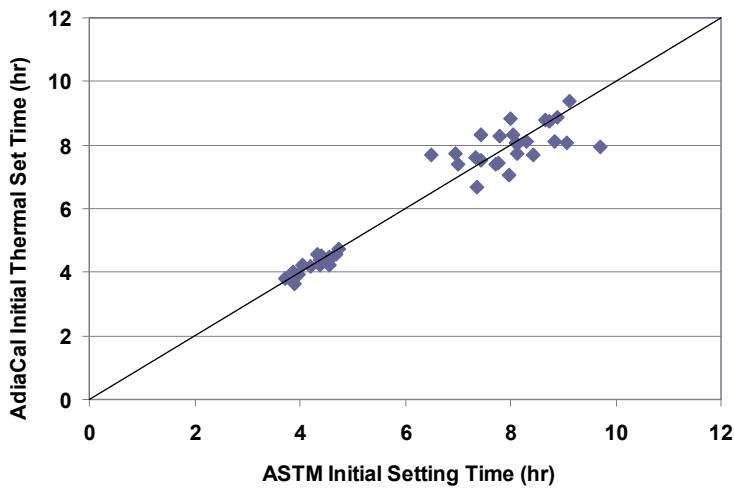
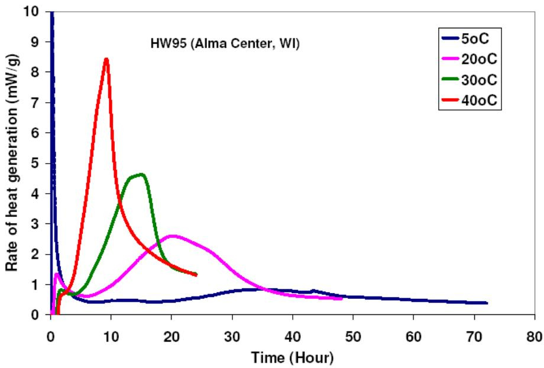
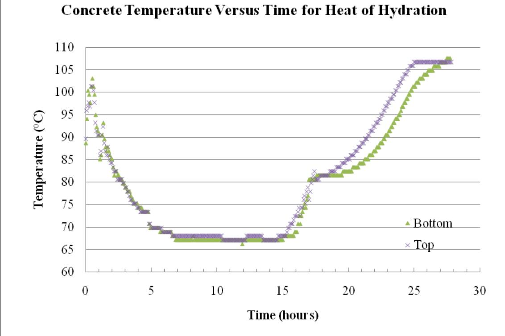
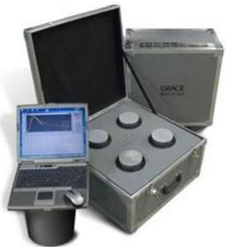
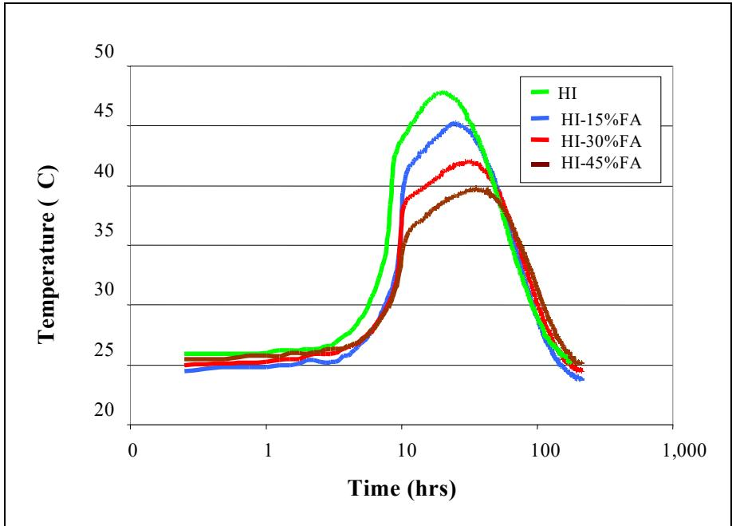

Heat Signature
A heat signature is the characteristic temperature-time curve generated by the exothermic chemical reactions that occur during cement hydration. The specific shape and magnitude of this curve are governed by factors such as cement composition, mix proportions, supplementary materials, water-to-cement ratio, and curing temperature [1] [3]. Calorimetric techniques, including isothermal, adiabatic, or semi-adiabatic methods, are used to measure the rate and amount of heat produced to quantify early-age behavior [3] [11]. Engineers utilize this data to assess setting behavior, predict strength development, and evaluate potential thermal cracking in concrete structures [1] [4].
Sources (13)
Key findings
- Supplementary cementitious materials such as fly ash and ground-granulated blast-furnace slag lowered the peak temperature generated by hydration, thereby reducing the likelihood of thermal cracking compared with ordinary Portland cement [2] [6] [7].
- The heat signature served as a unique fingerprint reflecting cement chemistry and mix proportions, enabling predictions for setting time, curing periods, thermal-cracking risk, and material incompatibility [1] [3].
- Silica fume produced a larger overall heat signature compared to other supplementary materials, although varying the dosage between 3% and 5% did not materially alter the curve or thermal behavior [2] [7].
- Increasing the mixing energy of cement pastes accelerated hydration, shifting the heat-of-hydration signature forward in time to produce a higher rate of heat generation and an earlier peak temperature [10].
- Isothermal calorimetry reliably distinguished heat-evolution signatures based on different cements, supplementary materials, water-to-cement ratios, and curing regimes, providing insight into thermal-cracking risk when integrated with predictive software [3].
- Curing temperature dominated heat-signature parameters, where raising the test temperature increased the peak heat-generation rate and total early heat while shortening initial and final thermal set times [4].
- Fly ash replacement shifted the heat-evolution curves in time without materially altering the magnitude of the peak heat, introducing a second peak associated with fly-ash hydration that confirmed compatibility with tested admixtures [4].
- The concrete’s heat signature varied markedly with depth during curing, creating temperature gradients that aligned with measured curling and warping strains to drive early-age deformation [13].
Calorimetric Measurement Techniques and Sensor Performance
A heat signature is the characteristic temperature-time curve generated by exothermic reactions during cement hydration, serving as a thermal fingerprint of the material’s chemical progress [1] [3] [6] [9]. Calorimetric techniques such as isothermal, adiabatic, and semi-adiabatic methods are employed to measure the rate and magnitude of this heat evolution [1] [3] [11]. The resulting data allows engineers to assess setting behavior, strength development, and potential thermal cracking by analyzing features like the dormant period and peak heat release rates [1] [4] [9] [10].
The following figure illustrates exponential equations used to approximate the relationship between P and Q.
 Exponential equations to approximate P vs. Q [4]
Exponential equations to approximate P vs. Q [4]
The figure displays a plot of measured heat evolution rate (P) versus calculated total heat evolved (Q), showing data curves for four different isothermal temperatures. Exponential regression equations are fitted to the experimental points, demonstrating that statistical models can predict hydration trends beyond the measured test range.
Research problem — The absence of a standardized, non-proprietary test method for measuring concrete heat signatures prevents engineers from reliably predicting early-age cracking risks and controlling long-term pavement durability [11]. Existing calorimetric techniques are often too expensive, complex, or time-consuming for field application, leaving a critical gap in the ability to rapidly monitor hydration processes and detect material incompatibilities on-site [1] [3] [4]. Variability in environmental conditions and instrument heat loss compromises the consistency of semi-adiabatic measurements, hindering their utility for routine quality control and accurate estimation of early strength development [4].
The following figure illustrates how varying curing temperatures influence the heat of hydration for Type I cement.
 Effect of curing temperature on heat of hydration (Type I cement) [3]
Effect of curing temperature on heat of hydration (Type I cement) [3]
The figure displays the rate of heat generation over time for Type I cement cured at four different constant temperatures. Cement hydration is accelerated at early ages under high environmental temperatures but is decelerated later on, as evidenced by the main peak shifting to an earlier time and increasing in value with higher temperature. The specific shape of this heat signature curve, including the position and magnitude of the main peak attributed to C3S hydration, varies significantly with curing temperature.
State of the art — Current practice for characterizing concrete heat signatures relies on isothermal, semi-adiabatic, and adiabatic calorimetry, with a shift toward portable instruments to enable field-based quality control [1] [11]. While commercial laboratory devices remain expensive, lower-cost portable units have been developed to provide repeatable heat-evolution data that correlates strongly with traditional set-time and strength metrics [3] [4]. The field is currently moving toward standardization through the definition of functional specifications for portable calorimeters and quantitative indices like the Heat Evolution Number to link thermal fingerprints to pavement performance [1] [12].
The following figure illustrates isothermal calorimetry results obtained during a field study in Alma Center, Wisconsin.

Isothermal calorimetry results from HW 95 (Alma Center, WI) field study [4]The figure displays the rate of heat evolution over time for three concrete samples labeled by date.
Findings from the reports
- Isothermal calorimetry reliably captures repeatable heat-evolution signatures that distinguish mixes with different cements, fly-ash contents, water-to-cement ratios, and curing temperatures [3] [4].
- The concrete heat signature uniquely reflects cement chemistry, admixtures, water-to-cement ratio, and curing conditions, enabling the forecasting of setting time, thermal-cracking risk, and appropriate sawing or finishing windows [1].
- The heat signature detects cementitious material incompatibilities by exhibiting sharp early exotherms that significantly accelerate both initial and final set times [3].
- Field monitoring confirmed that concrete surface temperatures varied markedly with depth, creating temperature gradients that aligned with measured curling and warping strains to drive early-age deformation [13].
- Semi-adiabatic calorimetry results vary strongly with concrete placement temperature, making the method useful for set-time prediction but less suitable for precise quality control compared to isothermal methods [4].
- Increasing test temperatures in controlled calorimetry raised peak heat-generation rates and total early heat while shortening initial thermal set times, whereas lower temperatures delayed peaks and lengthened the setting window [4].
- Fly-ash replacement and water-reducer dosages shifted heat-evolution curves earlier or later without altering their overall shape, introducing a distinctive second peak associated with fly-ash hydration that was absent in semi-adiabatic tests [4].
Novelty & rigor — The research introduces a non-proprietary, AASHTO-compatible test standard that establishes practical calorimetry procedures for quantifying the heat signature of concrete mixes, addressing the previous absence of accepted measurement standards [11]. A distinctive contribution is the development of a portable field-calorimetry system that enables on-site recording of heat evolution using low-cost devices, thereby extending thermal testing capabilities beyond traditional laboratory settings [1] [12]. The methodology is further distinguished by the definition of quantitative heat indexes derived from calorimetric curves and the implementation of computational models that convert mortar data to concrete signatures for rapid performance prediction [3] [4].
The portable field-calorimetry system developed in this research is exemplified by the AdiaCal calorimeter shown below.
 AdiaCal semi-adiabatic calorimeter used to monitor concrete temperature development history. [4]
AdiaCal semi-adiabatic calorimeter used to monitor concrete temperature development history. [4]
The image displays an open, portable metal case containing a white panel with four circular openings designed to hold cylindrical test samples. This device is identified as the AdiaCal calorimeter, which functions as a semi-adiabatic instrument used to measure concrete temperature development history and set times. By recording the heat evolution of the concrete over time, this apparatus generates the data necessary to quantify the cement hydration process.
Reported values
| Parameter | Value | Context | Source |
|---|---|---|---|
| calorimetry test feedback time | 12 to 48 hours | semi-adiabatic calorimetry tests | [1] |
| correlation coefficient (final set vs ASTM C 403) | 0.96 | calorimetric final-set times correlated with ASTM C 403 results | [3] |
| correlation coefficient (initial set vs ASTM C 403) | 0.95 | calorimetric initial-set times correlated with ASTM C 403 results | [3] |
| final set time | 8.4 to 3.0 hours | mix with incompatibility (25% Class C fly ash plus water reducer) | [3] |
| heat index A1 | 20.2 to 44.0 | mix with incompatibility (25% Class C fly ash plus water reducer) | [3] |
| heat index A2 | 59.9 to 4.8 | mix with incompatibility (25% Class C fly ash plus water reducer) | [3] |
| generated heat | 130 BTU/lb | after 150 hours of hydration | [4] |
| heat evolution | 120 BTU/gram | cementitious materials at the time of 150 hours | [4] |
| heat evolution | 130 BTU/lb | cementitious materials after 150 hours of hydration | [4] |
| maximum difference between AdiaCal and isothermal calorimetry thermal set times | 1.77 hours | comparison of AdiaCal and isothermal calorimetry methods | [4] |
| maximum difference between AdiaCal and isothermal calorimetry thermal set times (relative) | 18.2% | of ASTM result | [4] |
| maximum temperature | 111°F | during the monitoring period | [13] |
| minimum temperature | 0°F | during the monitoring period | [13] |
| temperature difference | 4°F to 12°F | between the top and bottom of the concrete | [13] |
| temperature difference | more than 50°F higher | MEMS digital humidity sensor compared to RFID tags | [13] |
4 more distinct values omitted here; the full span-verified set is in the quantities sidecar.
The following figure illustrates the correlation between ASTM initial set times and those measured by AdiaCal thermal monitoring.

Comparison of ASTM set time vs. AdiaCal thermal set time—initial set [4]The figure displays a scatter plot comparing the initial setting times measured by the ASTM method against those determined using an AdiaCal calorimeter. Data points are distributed around the equality line, indicating that “the thermal set time determined from the AdiaCal calorimeter was close to the ASTM setting time”.
Across the reviewed reports, isothermal calorimetry emerges as a highly repeatable and sensitive technique for capturing concrete heat signatures that distinguish mix variations, whereas semi-adiabatic methods exhibit greater variability influenced by placement temperatures. Both calorimetric approaches effectively predict early-age set times and thermal cracking risks, with isothermal data providing detailed insights into cement chemistry and fly-ash hydration kinetics that semi-adiabatic tests often miss. While laboratory calorimetry offers precise characterization of heat evolution parameters, field monitoring reveals significant practical challenges regarding sensor durability and the influence of environmental gradients on temperature readings. [1] [3] [4] [13]
The following figure illustrates isothermal test results for the HW 95 mortar mix to demonstrate how varying temperatures affect heat evolution.

Isothermal test results of HW 95 (Alma Center, WI) mortar mix 1 at different temperatures [4]The figure displays the rate of heat generation over time for a cementitious mixture tested under isothermal conditions. Distinct curves are plotted for different temperatures, showing that higher curing temperatures result in earlier and sharper peaks in heat evolution.
Implications — The unique nature of concrete’s calorimetric fingerprint implies that standardized, performance-based test procedures and inexpensive field calorimeters are necessary to transform heat signatures into routine quality-control tools for pavement construction [1]. Because calorimetric parameters correlate strongly with set-time measurements and thermal-cracking risk, engineers can utilize derived heat indexes as rapid diagnostic alternatives to predict early-age strength development and optimize mix proportion compliance [3]. Isothermal calorimetry provides a practical means to monitor supplementary cementitious material activity and flag admixture incompatibilities, allowing for adjusted curing schedules that mitigate risks associated with extreme ambient temperatures during placement [4].
The following figure illustrates isothermal calorimetry results for US 71 (Atlantic, IA) field concrete samples.
 Isothermal calorimetry results for US 71 (Atlantic, IA) field concrete samples [4]
Isothermal calorimetry results for US 71 (Atlantic, IA) field concrete samples [4]
The figure displays the rate of heat evolution in milliwatts per gram plotted against time in hours for four different dates. Each curve exhibits a characteristic shape with an initial slow increase followed by a rapid rise to a peak, and then a gradual decline as hydration proceeds.
Limitations — Practical deployment of embedded sensors is often compromised by early hardware failure due to environmental stressors, limited battery life in extreme conditions, and restricted memory capacity [13]. There remains a lack of consensus on interpreting heat-evolution curves for performance prediction, with simple calorimeters offering unquantified accuracy and complex devices being costly or slow [1] [3]. Calorimetric methods are sensitive to sampling errors, environmental fluctuations, and specific material compositions, often requiring complementary tests to address their limited ability to distinguish certain mix designs or detect water-to-cement ratio changes [3] [4].
The following figure illustrates calorimetry results for the incompatible materials.
 Calorimetry results for the incompatible materials [3]
Calorimetry results for the incompatible materials [3]
The figure displays heat evolution curves measured via isothermal calorimetry, plotting heat generation against time to characterize cement hydration. It illustrates how the addition of supplementary materials and admixtures alters the thermal fingerprint, specifically showing that an incompatible mixture (IS+FA+WR) exhibits a distinct secondary heat peak compared to standard mixes. This data demonstrates how calorimetric techniques are utilized to identify materials incompatibility and assess setting behavior in concrete systems.
Evidence: 9 reports (4 primary)
Hydration Kinetics and Mixing Energy Effects in Blended Cements
The hydration of cementitious materials is an exothermic process that releases heat, creating a temperature profile that reflects the rate of chemical reactions and strength development. The kinetics of this reaction are governed by the specific composition of the binder system, where different supplementary materials alter the timing and magnitude of heat release through variations in their intrinsic reactivity [2] [7]. Mixing energy influences the initial dispersion and particle interaction within the blend, thereby affecting the early-stage hydration kinetics that determine the resulting thermal signature.
The following figure illustrates the concrete temperatures over time to demonstrate the resulting thermal profile from this exothermic process.

Concrete temperatures versus time for heat of hydration [7]The plot tracks the thermal profile of concrete over time, showing a rapid initial cooling followed by a significant temperature rise as the material hydrates.
Research problem — The research community lacks a clear understanding of how supplementary cementitious materials modify the heat‑of‑hydration curve and consequently influence early‑age temperature rise, setting behavior, strength development and risk of thermal cracking, which hampers reliable mix design and construction scheduling [6] [7]. Excessive heat release during hydration—especially in large‑mass or hot‑weather placements and in rapid‑set calcium sulfoaluminate systems—creates thermal gradients that can induce cracking, degrade bond strength and compromise durability, prompting the need for predictive tools to identify the cement chemistry factors governing the heat signature and to mitigate its adverse effects [2] [9]. The influence of mixing energy on the timing and magnitude of heat evolution remains insufficiently quantified, raising questions about how mixer speed and duration affect hydration kinetics, early‑age strength gain and thermal stress development, and how these parameters can be optimized to ensure consistent mix quality [10].
The following figure illustrates the concrete temperatures over time during the heat of hydration process.
 Concrete temperatures versus time for heat of hydration [7]
Concrete temperatures versus time for heat of hydration [7]
The plot shows two distinct curves representing temperatures recorded at the top and bottom layers of reinforcement steel.
State of the art — The current industry standard evaluates the heat signature of cementitious systems using detailed calorimetric profiling to capture key parameters such as peak temperature, time to maximum, and area under the curve for predicting setting times and maturity [2]. Established practice utilizes these thermal fingerprints to assess how supplementary cementitious materials influence hydration kinetics, noting that slag typically lowers peak temperatures and delays the heat generation peak while silica fume additions have minimal impact at low replacement levels [2] [6] [7]. Modern assessment methods increasingly augment direct calorimetric data with statistical regression models linking cement phase compositions and SCM properties to heat-signature parameters to quantitatively predict thermal cracking risks in blended cements [2].
The figure below illustrates how slag influences the heat signature of ternary cement concrete.
 Effect of slag on ternary cement concrete heat signature [6]
Effect of slag on ternary cement concrete heat signature [6]
The figure displays a series of curves plotting the rate of heat generation against time for different concrete mixtures containing fly ash and varying percentages of slag. Visually, the data demonstrates that increasing slag content reduces the magnitude of the main hydration peak and delays its occurrence compared to the baseline mixture.
Findings from the reports
- Supplementary cementitious materials, specifically fly ash and ground granulated blast-furnace slag, lowered the peak temperature of hydration and reduced the overall heat signature compared to ordinary Portland cement [2] [6] [7].
- Ground granulated blast-furnace slag did not extend the dormant period and may have slightly accelerated the initial set time compared to fly ash blends [2] [6].
- Finer grade 120 ground granulated blast-furnace slag produced a noticeably higher temperature peak than coarser grade 100 slag cement [2] [7].
- Silica fume increased the overall heat release due to its strong pozzolanic activity, although varying the content between 3% and 5% had little effect on the heat signature curve [2] [7].
- Fly ash extended the dormant period and delayed the time to reach the peak rate of temperature rise by approximately one and a half hours relative to plain mixes [6].
- Increasing mixing energy with a high-shear mixer accelerated the rate of hydration, advanced the timing of peak heat generation, and increased the magnitude of the peak heat release [10].
- Latex-modified cement with very early strength exhibited a rapid heat evolution that was approximately twice that of conventional pavement cement paste between five and ten hours after mixing [9].
- The addition of citric acid to the latex-modified system created a distinct dormant period and shifted the peak heat generation to later times, whereas adding latex did not significantly alter the rapid-set cement’s heat signature [9].
- Heat-signature parameters such as slope, peak temperature, time to peak, and total heat could be predicted with linear models using clinker phase compositions and supplementary material properties [2].
Novelty & rigor — The research introduces a systematic framework for quantifying how supplementary cementitious materials alter the temperature-time fingerprint of concrete hydration, specifically linking fly ash and slag content to extended dormant periods and reduced peak temperatures [6] [7]. Methodological innovation is demonstrated through the application of high-shear pre-mixing energy to accelerate early-age hydration kinetics and the engineering of distinct thermal profiles using rapid-set binders combined with chemical retarders [9] [10]. The approach ensures reproducibility by defining rigorous calorimetric protocols that control placement temperatures and utilize standardized data acquisition to capture precise heat evolution rates and set-time behaviors across diverse ternary mix designs [6] [7] [9].
The experimental setup used to capture these thermal profiles is shown in the following figure.

Adiacal calorimetry test equipment for heat of hydration of concrete [7]The image displays a portable, metallic carrying case containing four cylindrical sample holders arranged in a square pattern. A laptop computer is connected to the apparatus and displays a graph with a curve representing temperature evolution over time. This setup measures the heat of hydration, which generates a characteristic temperature-time curve known as a heat signature.
Reported values
| Parameter | Value | Context | Source |
|---|---|---|---|
| R-squared | 0.651 to 0.756 | linear models for ternary mixes | [2] |
| delay in peak rate of adiabatic temperature rise | 1.5 hours | concrete containing fly ash compared with concrete without fly ash | [6] |
| silica fume replacement percentage | 3 or 5 percent | silica fume in concrete mixtures | [7] |
| silica fume replacement percentage | 3 or 5 percent% | silica fume in concrete mixtures | [7] |
| cumulative heat of hydration | 200 J/g | LMC-VE paste at 20 hours after mixing | [9] |
| cumulative heat of hydration | around 200 J/g | paste with rapid set cement, latex, and citric acid at 20 hours | [9] |
| heat of hydration | 180 J/g | LMC-VE paste at 10 hours after mixing | [9] |
| heat of hydration | 25 J/g | LMC-VE paste at 5 hours after mixing | [9] |
| heat of hydration | about 25 J/g to 180 J/g | LMC-VE paste (cement, latex, and citric acid) during 5 to 10 hours after mixing | [9] |
| mixing speed | 14,000 revolutions per minute | high shear mixer at mixing speed two | [10] |
| mixing time | 60 seconds | high shear mixer at mixing speed two | [10] |
Across the reviewed reports, supplementary cementitious materials generally reduce the peak temperature and delay the time to peak heat generation compared with ordinary Portland cement, although specific SCMs exhibit distinct behaviors such as slag potentially accelerating initial set or silica fume increasing overall heat release. While SCM composition and fineness significantly influence the magnitude and timing of thermal peaks, higher mixing energy independently accelerates hydration kinetics by advancing the onset of heat generation and increasing the peak rate. In contrast to standard blended cements, rapid-set systems with specific chemical admixtures can exhibit extremely fast early hydration with no dormant period or significantly elevated heat evolution rates that double those of conventional pavements. [2] [6] [7] [9] [10]
The figure below illustrates the heat of hydration results for 100% Portland cement mixed with a high shear mixer.
 Heat of hydration results for 100% PC, high shear mixer [10]
Heat of hydration results for 100% PC, high shear mixer [10]
The figure displays a set of temperature-time curves representing the heat signature generated by cement paste samples subjected to different mixing conditions. The data illustrates how mixing energy influences hydration kinetics, as the source context notes that increased mixing speed can increase the rate of cement paste hydration.
Implications — Designers can mitigate thermal cracking risks in large pours by selecting supplementary cementitious materials that lower peak hydration temperatures, such as fly ash or slag, while adjusting construction schedules to accommodate the extended set times associated with these blends [6] [7]. Engineers should utilize predictive heat-signature models based on cement chemistry variables to narrow viable mix designs and anticipate thermal behavior before field implementation, ensuring that any extrapolation beyond tested material ranges is verified [2]. Mix designers must actively control mixing energy levels, as high-shear mixing significantly accelerates hydration onset and early-age strength development, requiring heat-signature testing to validate mixing protocols and prevent excessive thermal stresses [10]. For systems exhibiting pronounced late-age heat surges, passive mix adjustments are insufficient; therefore, contractors must implement active temperature-control measures such as pre-cooling aggregates or controlled curing regimes to prevent early thermal cracking [9].
Limitations — The calorimetric measurements fail to capture the rapid initial temperature spike occurring within the first few minutes of mixing, leaving the earliest hydration stages unrecorded [6]. Predictive models for heat-signature parameters are restricted to specific material proportions and may yield inaccurate results if extrapolated beyond the tested ranges or applied to different cement sources [2]. The sensitivity of heat-generation trends to mixing energy is limited, as observed patterns are inconsistent across mixes and the test method appears relatively insensitive to variations in mixing conditions [10].
The following figure illustrates the concrete temperature profile that highlights these measurement limitations.

Concrete temperature [6]The figure displays a heat signature, which is the characteristic temperature-time curve generated by exothermic chemical reactions during cement hydration. It plots temperature in degrees Celsius against time in hours on logarithmic scales for concrete mixes containing different levels of fly ash replacement.
Evidence: 5 reports (5 primary)
Related concepts
In this hierarchy
- Parent: Cement Hydration
- Sibling: Degree of Hydration
- Sibling: Heat of Hydration
- Sibling: Initial Set
- Sibling: Thermogravimetric Analysis
Related by shared evidence
- Cement Hydration — shares 12 reports
- Calorimetry — shares 11 reports
- Heat of Hydration — shares 11 reports
- Cement-Admixture Compatibility — shares 10 reports
- Supplementary Cementitious Materials — shares 10 reports
- Air Entraining Agent — shares 9 reports
- Concrete Materials & Mixtures — shares 9 reports
- CP Tech Center Reports — shares 9 reports
Similar topics
- Heat of Hydration
- Calorimetry
- Heat Index Method
- Cement Hydration
- Hydration, Heat & Maturity
- HIPERPAV
- Adiabatic Calorimeter
- Supplementary Cementitious Materials
References
- K. Wang, Z. Ge, J. Grove, J. M. Ruiz, and R. Rasmussen, "Developing a Simple and Rapid Test for Monitoring the Heat Evolution of Concrete Mixtures (Phase 3)," CTRE, Iowa State University, Ames, IA, Rep. FHWA Project 17 (Phase I), 2006. [Online]. Available: https://www.intrans.iastate.edu/wp-content/uploads/2018/03/CalorimeterReportPhaseIII.pdf
- P. Tikalsky, V. Schaefer, K. Wang, B. Scheetz, T. Rupnow, A. St. Clair, M. Siddiqi, and S. Marquez, "Development of Performance Properties of Ternary Mixes, Phase 1," Center for Transportation Research and Education, Ames, IA, Rep. TPF-5(117), 2007. [Online]. Available: https://www.intrans.iastate.edu/research/completed/development-of-performance-properties-of-ternary-mixes-phase-1/
- K. Wang, Z. Ge, J. Grove, J. M. Ruiz, R. Rasmussen, and T. Ferragut, "Simple and Rapid Test for Monitoring the Heat Evolution of Concrete Mixtures, Phase 2," Center for Transportation Research and Education, Ames, IA, 2007. [Online]. Available: https://www.intrans.iastate.edu/wp-content/uploads/2018/03/calorimeter.pdf
- K. Wang, J. M. Ruiz, J. Hu, Z. Ge, Q. Xu, J. Grove, and R. Rasmussen, "Simple and Rapid Test for Monitoring the Heat Evolution ..., Phase III," National Concrete Pavement Technology Center, Ames, IA, 2008. [Online]. Available: https://www.intrans.iastate.edu/wp-content/uploads/2018/03/CalorimeterReportPhaseIII.pdf
- P. Tikalsky, P. Taylor, S. Hanson, and P. Ghosh, "Development of Performance Properties of Ternary Mixtures: Laboratory Study on Concrete," National Concrete Pavement Technology Center, Ames, IA, Rep. TPF-5(117), 2011. [Online]. Available: https://www.intrans.iastate.edu/research/completed/development-of-performance-properties-of-ternary-mixtures-laboratory-study-on-concrete/
- K. Wang and Z. Ge, "Evaluating Properties of Blended Cements for Concrete Pavements," Department of Civil, Construction and Environmental Engineering, Iowa State University, Ames, IA, 2003. [Online]. Available: https://www.intrans.iastate.edu/wp-content/uploads/2018/03/blended_cements-1.pdf
- P. Taylor, P. Tikalsky, K. Wang, G. Fick, and X. Wang, "Development of Performance Properties of Ternary Mixtures: Field Demonstrations and Project Summary," National Concrete Pavement Technology Center, Ames, IA, Rep. TPF-5(117), 2012. [Online]. Available: https://www.intrans.iastate.edu/wp-content/uploads/2018/03/ternary_final_w_cvr.pdf
- S. Schlorholtz, K. Wang, J. Hu, and S. Zhang, "Materials and Mix Optimization Procedures for PCC Pavements," CTRE, Iowa State University, Ames, IA, Rep. TR-484, 2006. [Online]. Available: https://www.intrans.iastate.edu/wp-content/uploads/2018/03/mco-final.pdf
- K. Wang, B. M. Shankaramurthy, A. Anand, Y. Sargam, K. Freeseman, and B. Phares, "Performance Evaluation of Very Early Strength Latex-Modified Concrete (LMC-VE) Overlay," Institute for Transportation, Iowa State University, Ames, IA, Rep. TR-771, 2024. [Online]. Available: https://bec.iastate.edu/wp-content/uploads/2024/10/performance_evaluation_of_LMC-VE_overlay_w_cvr.pdf
- T. D. Rupnow, V. R. Schaefer, K. Wang, and B. L. Hermanson, "Improving PCC Mix Consistency and Production Rate through Two-Stage Mixing," Center for Transportation Research and Education, Ames, IA, Rep. TR-505, 2007. [Online]. Available: https://www.intrans.iastate.edu/wp-content/uploads/2018/03/two-stage-mix-1.pdf
- D. Harrington, R. Rasmussen, D. Merritt, T. Cackler, and P. Taylor, "Long-Term Plan for Concrete Pavement Research and Technology—The Concrete Pavement Road Map (Second Generation): Volume II, Tracks (FHWA-HRT-11-070)," National Center for Concrete Pavement Technology, Iowa State University, Ames, IA, 2012. [Online]. Available: https://www.fhwa.dot.gov/publications/research/infrastructure/pavements/pccp/11070/11070.pdf
- J. Grove, G. Fick, T. Rupnow, and F. Bektas, "Material and Construction Optimization for Prevention of Premature Pavement Distress in PCC Pavements," National Concrete Pavement Technology Center, Ames, IA, Rep. TPF-5(066), 2008. [Online]. Available: https://www.intrans.iastate.edu/wp-content/uploads/2018/03/mco-final.pdf
- H. Ceylan, L. Dong, S. Yang, Y. Jiao, S. Yavas, S. Kim, K. Gopalakrishnan, and P. Taylor, "Development of a Wireless MEMS Multifunction Sensor System and Field Demonstration of Embedded Sensors for Monitoring Concrete Pavements, Volume I," Institute for Transportation, Ames, IA, Rep. TR-637, 2016. [Online]. Available: https://prosper.intrans.iastate.edu/wp-content/uploads/2018/03/wireless_MEMS_volume_I_field_demo_w_cvr.pdf
Feedback on this page